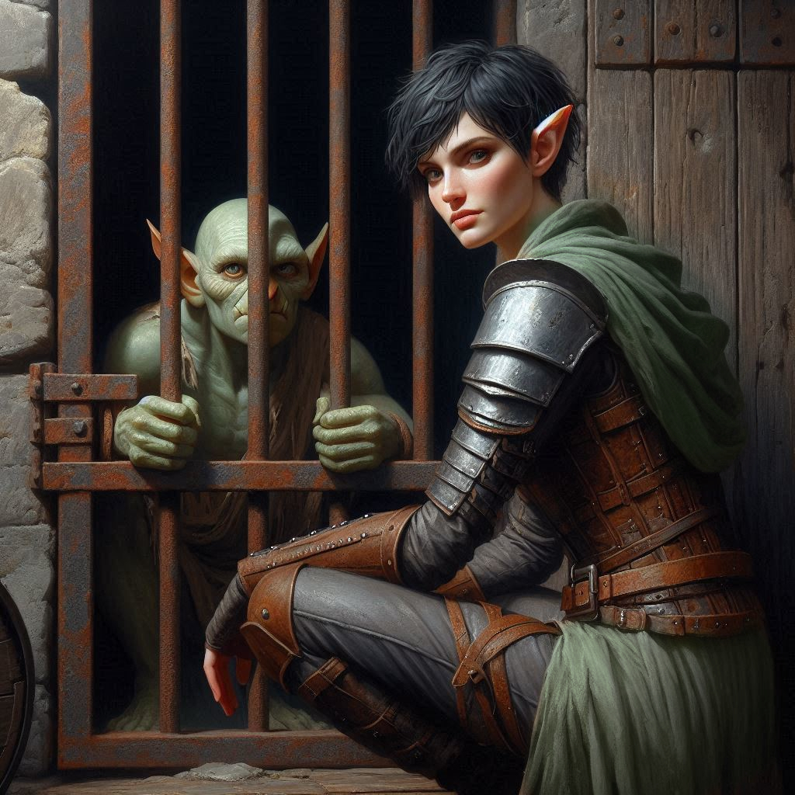

Discovery in the Dungeon
Your arrival in the Realm of Shadows does not go unnoticed for long. You try to keep to the shadows of the ancient city streets, but an elf and human have little hope of blending in very well in the land of the Drow. A squad of armored dark elves are moving toward you to investigate your unusual appearance. Jorsh is already moving, his black cloak swirling as he raises a hand, conjuring a pulse of dark energy to push back the squad of dark elf warriors charging toward you.
You draw your short sword, the blade whispering free of its sheath. The first enemy lunges—a lithe dark elf wielding twin daggers, his violet eyes gleaming with malice. You parry, duck, and drive your knee into his gut, sending him staggering. Another attacker comes from the left; you pivot, slashing in a clean arc that forces him back. Jorsh mutters an incantation, his voice low and sharp, and a torrent of crackling black lightning erupts from his fingers, sending two elves to the ground, writhing in pain.
A sharp whistle cuts through the chaos, and you whirl to find one of the elves still standing, his dark armor gleaming under the unnatural glow of the street lanterns. Unlike the others, he does not attack. Instead, he smirks, pressing a hand to his bleeding side. “You are too late, surface-dwellers. The Archon of Light is already in our grasp. Soon, he will be offered to Yaldaboath.”
“The Archon of Light?” You look at Jorsh in confusion.
“Onyx,” Jorsh says. “He’s talking about Onyx.”
The words send ice through your veins. “Where is he?”
The elf chuckles but says nothing more. Jorsh strides forward, grasping the elf’s collar and whispering something in his ear. The smirk vanishes, replaced by wide-eyed horror. “The temple,” he gasps. “Below the city. The old tunnels—”
A sickening crack silences him. Jorsh lets the lifeless body fall and turns to you. “We move. Now.”
Together, you slip into the shadows, weaving through narrow alleyways and crumbling tunnels beneath the dark city. The deeper you go, the heavier the air becomes, filled with the sulfuric stench of something ancient and hungry. The faint sound of chains clinking reaches your ears.
Then—a muffled voice.
You press against a crumbling wall, peering through a rusted iron grate into a dimly lit chamber. A small goblin, bound in iron shackles, squints at you with beady golden eyes. “Well, well,” he rasps. “You’re not from around here.”
You crouch, keeping your voice low. “Who are you?”
“Shamurel.” The goblin licks his cracked lips. “And if you want your dwarf friend back, you’ll need my help.”
You exchange a glance with Jorsh. Trusting a goblin in the Shadow Realm is a gamble—but time is short. The ritual could already be underway. Taking a steadying breath, you slide a lockpick from your belt and get to work. Moments later, the shackles fall away, and Shamurel rubs his wrists, grinning. “Smart choice. Now, follow me.”
“Kira,” Jorsh says. “We don’t have time for this. Leave the monster alone and come with me. Please.”
“You won't succeed without my help,” the goblin hisses.
Jorsh rolls his eyes.